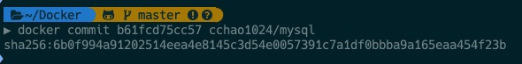
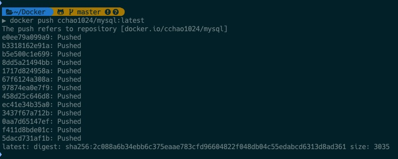

Docker 是一个开源的应用容器引擎，基于 Go 语言 并遵从Apache2.0协议开源。
Docker 可以让开发者打包他们的应用以及依赖包到一个轻量级、可移植的容器中，然后发布到任何流行的 Linux 机器上，也可以实现虚拟化。
容器是完全使用沙箱机制，相互之间不会有任何接口（类似 iPhone 的 app）, 更重要的是容器性能开销极低。
Docker
1 | install |
正常的话显示
1 | Unable to find image 'hello-world:latest' locally |
运行一个web应用
1 | # docker pull training/webapp # 载入镜像 |

常用命令
1 | # 查看容器状态 |

Docker-Compose
Compose 项目是 Docker 官方的开源项目，负责实现对 Docker 容器集群的快速编排。Compose 定位是 「定义和运行多个 Docker 容器的应用（Defining and running multicontainer Docker applications）」
1 | pip3 如果不存在就先按照pip3 |
安装完成后，在本地新建编辑一个 docker-compose.yml，在里面编写特定规则的配置项，通过 up 命令，就可以依次下载运行配置项中的镜像了1
docker-compose up
[docker-compose.yml 一键部署后端运行环境]
1 | version: "3.7" |
注意目录挂载中的文件挂载。如果不存在该文件，docker-compose 是会把它当成目录去创建，如：/nginx/conf/nginx.conf，需要手动 创建这个配置文件，而且不是仅仅创建就完了，还需要对他进行正确的配置
笔者也觉得很麻烦，所以是通过一个git仓库去管理这些文件的，每次部署（可能几年就一次）新的设备时，就 pull 下来 直接 docm up 就可以了
在实际开发中，这个 docker-compose 太长了，可以通过配置别名 alias 把它改短一些，笔者用的是docm1
alias docm="docker-compose"

打包容器到Docker hub
去 https://hub.docker.com 新建一个 repository
docker login登录账号运行
docker ps查看当前容器 id创建一个提交生成镜像
docker commit CONTAINER_ID Name
push 刚才的镜像到远程仓库
正常的使用镜像
1
2
3
4
5
6
7
8
9
10
11
12
13version: "3.7"
services:
mysql_cchao:
container_name: mysql_cchao
image: cchao1024/mysql:latest #从私有仓库拉镜像
restart: always
volumes:
- ./mysql/data/:/var/lib/mysql/ #映射mysql的数据目录到宿主机，保存数据
- ./mysql/conf/mysqld.cnf:/etc/mysql/mysql.conf.d/mysqld.cnf
ports:
- "3307:3307"
environment:
- MYSQL_ROOT_PASSWORD=ROOT